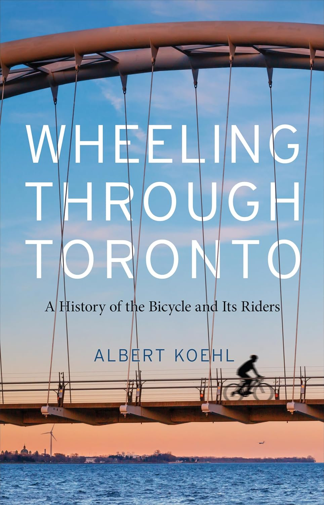

So imagine that based on the best scientific evidence, humans had to have first occured around 300 000 years ago in Africa, we(homo-sapiens) migrated out of Africa about
70-90 000 years ago
These are all important historical numbers to think about in contrast to our time here and now.
think how big those numbers are and how much youve experienced in a year for example. think how many grandmothers you would have in
1000 years...
Heading
early transportation
Evidence suggests that we(humans) have been horse donkey and oxen riding, horse and chariot for about 5800 -6000 years. Thats alot of years!
by comparison, we have only had mechanized technologyfor about the past 150 years, or for about 1/60th of the entire time we have had alternatives to walking.
for thousands of years all we had was animal chariots!
This article is ultimately about bicycles , however we think its important to be exposed to some of the important aspects to develop greater context to understand transportation in modern times.
The wheel in the image above is an example of one of the first uses of wheel in transportation, theorized to have first been used to make pottery and then adapted for wagons and chariots. The potters wheel was invented around 4000 bc so we suspect it was before 3000 bc. that the wheel first started to become used for chariot. There is more evidence of wheels from 4500bc almost at the same time in Mesopotamia, Northern Caucasus, and Central Europe.

Yamanya Wagon - thought to be pulled mainly by oxen however there is evidence that they rode horses. Their skeletons have same characteristics evidence of long term horseriding. The earliest known chariots have been found in sintashta burials , and sintashta culture is thought to have evolved from the Yamanaya.
can you even imagine a time without electricity or cars? look at how simple a wagon like this is compared to what we see today. this is what our ancestors mostly had to use before the last 200 years. Its amazing that we lived on such simple technology for so long!
Ljubljana Marshes Wheel with axle — oldest wooden wheel ever discovered; it has a diameter of 70 centimeters (27+1⁄2 in), is made of ash and oak; the aperture for the 120-centimetre-long (47+1⁄4 in) axle is square, which means that the wheel and the axle rotated together
Ljubljana marshes, Slovenia, 20 kilometers southeast of Ljubljana — Slovenian scientists claimed they found the world’s oldest wheel and axle. Dated with radiocarbon method by experts in Vienna to be between 5,100 and 5,350 years old the found in the remains of a pile-dwelling settlement, the wheel has a radius of 70 centimeters and is five centimeters thick. It is made of ash and oak. Surprisingly technologically advanced, it was made of two ashen panels of the same tree. The axle, whose age could not be precisely established, is about as old as the wheel. It is 120 centimeters long and made of oak. [Source: Slovenia News]

One of the oldest canoes found under lake bracciano . The oldest boats ever found in the mediterranean, constructed of oak, polar, and european beech . Italy. While this article is focused on terrestrial transportation it should be mentioned that boats were a very significant form of transportation for a very long time all over the world, in different cultures indepedently.
https://europe.factsanddetails.com/article/entry-886.html
https://northernwilds.com/worlds-oldest-canoes-where-are-they/
Yamnaya Culture, Carts, Chariots and Horses
Andrew Curry wrote in National Geographic: "The Yamnaya were Europe's first true nomads. They used domesticated cattle and horses to access the interiors of the Asian Steppe, where there is little to eat or drink, so carried everything with them on wagons. Physically they were unusually large, which we can see by measuring the skeletons and also genetically, and apparently fairly violent," University of Cambridge geneticist William Barrie said. [Source: Andrew Curry, National Geographic, August 2019]
All over the world , boats, animal chariots and walking were the only modes of transportation. generations and generations of social cultural and civilizational change took place. the conception of one god, the movement from philosophy into moder science, the acceptance of the concept that the earth revolves around the sun, Issac Newtons fundamental theories of physics.
would you kill for a horse?
Above is an image of ancient egyptian heiroglyphs depicting a chariot rider engaging in violence withan opponent. Consider how valuable a horse might have been at a time when we only had our feet. Horses were extremely important for huge empires like rome and egypt for transportation trading and war. Greatful for the revolutions in technology and transportation that have taken place. But consider that this was still relatively recent in the larger scale of human history.
As far as we know, walking was the primary mode of transportation for 99.9 percent of human history(millions of years) and we only started using alternatives 6000 years ago .
in ancient Rome and Egypt, people would kill for horses, and they were extremely valuable.
 thousands of years later...
thousands of years later...

The first self-propelled vehicle
Nicolas-Joseph Cugnot's Steam-Powered Vehicle (1769): was the first self-propelled vehicle. It had 3 wheels and was particularly dangerous moving with a steaming pot on the front end. It was designed to transport cannons for the French Army and paved the way for the concept of self propelled vehicles. There were many different steam and gasoline powered vehicles that came afterward. At the end of the 1800s steam engine vehicles were superseded by vehicles that used the internal combustion engine invented in the 1860s by Nicolaus Otto.
Steam to oil
Steam cars were successful , but they had serious limitations including weight complexity, and safety. In the 1860s, Nicolaus Otto invented the first internal combustion engine fuelled by oil. The corresponding discovery of oil iin the mid 1800s also provided the first source of fuel for these new vehicles. The first commercial ooil well was drilled in 1859(a mere 130-140 years ago) by Edwin Drake in Pennsylvania, USA.
Steam engines became weeded out at the end of the 1800s because the combustion engine made it more efficient to burn oil. Prior this change in production and transportation, the oil industry was concerned with lubricants, lighting and kerosene, and niches like cosmetics and medicine-demand for oil was small compared to what the demand was when new accessible technologies became available after the combustion engine was invented.
Tricycles
by a disabled person. the tricycle prioritized balance over speed. tricycles could be found in stores up until the early 1900s next to bicycles. Tricycles were seen as a liesure device. queen victoria famously owned a tricycle and it was seen as a symbol of status among a rich demographic.
The Industrial Revolution
The origin of our modern form of transportation is most commonly associated with the industrial revolution however there were . In this time around the 1800s, inventions for efficiency drastically changed the world. mechanized vehicles powered by steam were first developed in the mid 1700s then became popular in production and transportation. Railways were then introduced in the 1800s. (about 100 years before the bicycle). 
pictured above is the 'Cyclomer", an interesting concept bicycle designed in the 1930s. The first amphibious cycles were designed as early as the 1860s with tricycles. https://picryl.com/media/amfibiefiets-amphibious-bicycle-fffb97
https://en.wikipedia.org/wiki/Amphibious_cycle

1915 "Water Bicycle" by Julian bettinger
BICYCLES
The first bicycles were developed in the mid 1800s somewhere between steam and oil powered vehicles.,Bikes only became accessible in the late 1800s (160-170 years ago).
DRASINE- The dandy horse- A bike without pedals
SAFETY BICYCLE- The first bicycles were like fixie bikes, meaning they could not coast or roll and you had to keep your feet moving with the wheels. If you wanted to go faster, you had to pedal faster and you couldn’t stop.
Someone invented another bike which had a bigger front wheel. The bigger wheel makes it so that you have to pedal less to go a longer distance, and the bigger wheel also reduced shock/ bumpy riding.
Then someone implemented gears onto the bicycle- the first gear bicycles, you had to replace while on the road
in the early 1900s we started using developing bicycle derailleurs(pulleys) which made gear shifting automatic. In the 30s Tullo Campagnolo was credited with perfecting the bicycle derailleur system.
Interestingly, derailleurs were thought of as cheating and banned from bicycle racing when they were first introduced. This significant improvement revolutionized bicycling.
What if bikes had excellent deraiiluers before cars, do you think bicycles wouldve had more popularity?
left:Penny Farthing- The penny farthing did not have gears and had one large wheel which allowed the rider to propel himself forward more than a smaller wheel.
Right: Rover, considered the first "safety bicycle" which paved the way to modern bicycles. it superseded the Penny-Farthing because of stability, rear wheel pedalling, and accessibility. It wasnt as dangerous as the penny farthing it was more efficient and comfortable.
https://www.youtube.com/watch?v=yDjlRu4CnjI

The Dandy horse was technically the first bicycle. It was not as popular as the gear bicycles which came out in the late 1800s in the "Bicycle craze"https://www.youtube.com/watch?v=yDjlRu4CnjI
Into the 1900s, transportation lnnovations started to become decided upon. The automobile and the bicycle

Français : Etienne Bunau-Varilla (1890-1961) installant Marcel Berthet (1887-1953) dans son vélo torpille au Parc des Princes en 1913.
Etienne Bunau-Varilla (1890-1961) “became involved in bicycle racing and together with the engineer Marcel Riffard (later to become the designer of the famous Caudron racing planes of the 1930s) designed a streamlined enclosed bicycle which beat the world speed record, pedalled by the champion Marcel Berthet.”
https://www.thefirstairraces.net/pilots/bunauvarilla.php
link: https://capovelo.com/looking-back-at-bicycle-engineer-etienne-bunau-varillas-and-his-velo-torpille-torpedo-bike/

Henry Ford mounting a Quadricycle, Henry fords first motorized vehicle which lead to the development of modern vehicles.
Heres something you wont see everyday. On the left is an image of a bicycle in an enclosure, and on the right you can see an automobile without an enclosure!
actually this bicycle enclosure won a record , and on the right the automobile is the first motorized vehicle, the model-A! These days you only see cars in enclosures and bikes exposed.observe the wheels on the automobile. theyre alot like bicycle wheels! isnt that interesting?
THE AUTOMOBILE
Karl Benz improved Nocolaus Ottos combustion engine and is credited with the invention first practical automoile powered by internal combustion. "The Motorwagen"(1886) by Benz and Cie. In 1926
Daimler-Motoren Gesellschaft and Benz & Cie. merged to form Daimler-Benz, the
company that is behind the Mercedes-Benz brand.

Maybach
Wilhelm Maybach, was a key engineer for Mercedez Benz. was also the founder of Maybach, which was originally a company that produced zepplin engines for the German army.
The Model T , Fords "Town Car" was the first commercially available automobile with an enclosure
FORD
The automobile wasn't just a technological development, its impact has had huge consequences for our world today.
FORDISM
Fordism influenced the world and nations economic thinking. Fordism was not only a method of production but it was an ideology that influenced the way everyone works.
TOronto
Fordism influenced the world and nations economic thinking. Fordism was not only a method of production but it was an ideology that influenced the way everyone works.
Long-Term outcomes of Motorized vehicles
Production Method
Fordism spread globally and became the foundation to economic development and schemes until today. This is an extremely important thing, like the invention of the lightbulb but lesser known. but the implications have impacted societies culture values economy in . we have politics but production method stays the same, its extremely powerful lesser known about and lesser contested.
plastics
Plastic is a byproduct of oil, and the invention of plastic is related to the boom of oil that was the outcome of
Today only about 4% of global virgin plastic is made from oil, however, the conception of plastic is closely tied to the boom of oil that resulted from the automobile industry
Connection Between Automobiles, Oil, and Plastics
There's a significant connection between automobiles, oil, and plastics. Here's what we found:
- Oil for Cars and Plastics: The oil industry supplies fuel for cars and also provides feedstocks for making plastics. About 4% of the world's oil production goes into producing virgin (new) plastic.¹ ² ³
- Same Producers: Companies involved in oil production for cars often have interests in producing plastics from petrochemicals derived from oil and natural gas. Major companies like ExxonMobil, Dow, and BP invest heavily in chemical production facilities for making plastics.⁴
- Plastic Production Growth: The fossil fuel industry plans to increase plastic production by 40% over the next decade, with petrochemical plants turning fracked gas into plastic.⁵
Key Facts
- Plastic from Oil Byproducts: Plastics are made from byproducts of oil refining, like naphtha.
- Plastic Production and Pollution: Plastic manufacturing and processing could consume as much as 20% of global oil production and use up 15% of the annual carbon emissions budget by 2040.⁶
- Recycling Challenges: With the price of oil plummeting, virgin plastic is often cheaper than recycled plastic, making sustainability initiatives less appealing to companies.
1.https://www.preventedoceanplastic.com/the-relationship-between-oil-and-plastic-and-what-that-means-for-recycling/
2.https://oilprice.com/Energy/Energy-General/How-Much-Crude-Oil-Does-Plastic-Production-Really-Consume.html
3.https://www.sciencedirect.com/science/article/pii/S2352484722021540
4.https://www.surfrider.org/news/the-link-between-fossil-fuels-single-use-plastics-and-climate-change
5.https://www.biologicaldiversity.org/programs/population_and_sustainability/sustainability/plastic_bag_facts.html
ideologically
The automotive industry made the landscape
it contributed to war for oil
it made it possible to transport items long distances
these are not all necessarily bad things, but it came with long term consequences which arent necessarily the most efficient
but have created dependence on systems with ideologies that we dont necessarily agree with
WE ARE THE FUEL WE ARE THE BOILER, WE ARE THE POWER
Discussion
Ideological concerns
ASIDE: Because oil became popular, that industry looked for other ways to innovate and plastic was invented. Plastic became popularized/ normalized in the 1960s
The types of societal values and information we had during the emergence of these technologies is also an important aspect to consider since things have changed up until today but gas automobiles are still prevalent. Such things as definitions of pragmatism and efficiency are important - Transporting heavy loads and persons is the ultimate purpose of the motorized vehicle and the vehicle was developed prior to the recognition of environmental and social consequences.. In contrast the bicycle was not initially developed for that purpose and was seen as a novelty or racing vehicle that could transport individuals a bit faster than walking in the time of its conception. Up until today, the bicycle contributes very little to environmental and potentially sociocultural dysfunctions as the automobile might.
The purpose of the bicycle was not to replace traditional wagons and chariots. Today, however, a significant portion of automobiles for the consumer demographic in the developed world are driven with one passenger. This is a considerable loss in efficiency. conversely , our modern culture doesnt encourage us that much to care and mostly people do not actively engage in carpooling or alternative modes of transportation. [source]
STIGMAS
Bicycling is associated with poor people and children, and this is a stigma we want to eliminate.
the philosophical thinking behind our modern science and development planning was not what it is today , and there are profiteers that are intentionally in the way of de technologizing, depoisoning, de exploitation, and de weaponizing our solutions to problems. The bicycle is a punch back to all the people who are trying to profit from your expensive car related costs.
Were not downplaying the automobile or saying the bicycle is always going to be a feasible alternative mode of transportation versus other modes of transportation, however it has excellent potential for the rider and the world.
Going back thousands of years, people often thought that there were many gods prior to aristotle. People had different funky explanations for physical phenomena before the development of modern science(empiricism). So its important to understand the entire premise by which products were developed in the time of their emergence. In another article we put the bicycle in the frame of divine mythology to capture its self made and abstract meaning. it really is what you make it, and the bicycle is ultimately alot for a little.
Discussion
Rachel Carson's work may bear similarities to a relationship we see between humanity and the automobile. For example when DDT was developed , people all over the world were drenching themselves in this unknowingly toxic substance to repel insects and it lead to significant health defects in its users. Prior to her study, the substance was readily used. There was alot more to it than the end use of the product- and up until today, this is still a difficult concept for our culture to adopt since our culture prioritizes certain definitions of efficiency, and economics.
other examples of products which have gained prevalence in our normalized culture but have recently been found to have unethical roots and ideological discrepancies include
-Fast and processed foods- originally a convenient tasty alternative to cooking- now recognized to be a significant contributor to many chronic illnesses with unethical roots in its production and the manner in which marketing enabled fast food to enter into our culture through generations
-Smoking- Originally a Native American traditional ceremonial practice, brought back/stolen by Europeans, then used marketed in modern times until almost everyone was smoking at one point- until it was realized that smoking was also a significant cause of serious chronic illnesses and that marketers were exploiting peoples addiction
-Plastic-originally branded as a material that would "save" elephants from being hunted for their tusks, a cheap and accessible material, then marketed in the 1980s as a feasible alternative to cleaning and washing dishes- Has now become realized for the incredible amount of toxic garbage and environmental ecological impact it has produced
These examples all have similarities that we encourage intelligent persons to evaluate for themselves. Many of the deep fundamental ideologies that act as the premise that governments accept which permit harmful products and substances to persist come from a primitive time in our civilization. We may think we are very modern however some of the implications of seemingly regular social behaviours and cultures are very seriously beside the most primitive forms of slavery racism inequality exploitation and violence. Importantly we want to emphasize how much real benefit bicycles have been found to generate , and how harmless they have consistently been through hundreds of years now.
Disposable plastic socia l media that banks on shock- and
These are all examples of things that were developed under an ideological premise that ultimately prioritizes profit in the immediate term.
And we may engage with such products readily as they become normal and popular even though we may have very serious fundamental disagreements with using such products in principle and in the long term they contribute to extremely immoral sentiments, especially felt by the natural world.
things may even become so normal that we forget to think, that we develop trust in sources we dont know, that we become lazy and fall for the idea that our own individual thoughts and actions will make no difference in the world.
We think its important to understand that our culture comes from a place that may not necessarily be moral or consistent with our individual personal values. We just want to promote critical thinking when it comes to evaluating products we engage with indirectly because our current culture pushes us to NOT THINK at all, especially when it comes to consumer products. Advertisers dont want us to think about anything other than what they want to show us, and yet what they show us is all we generally will see. From this perspective you can be sure , and we can attest based on empirical studies that the bicycle is not doing much harm in the world. The bicycle is a good choice. when it comes to considering motorized derivatives of bicycles we ask the reader to think more critically about what they are promoting in terms of what advancement will constitute, when it comes to bicycles. More of which will be elaborated in the second part of this article series.
Heading
Side blurb Modern development
definition Development modernization
Countries developments: measured in gdp sometimes. Gini coefficient. however in different countries it is important to understand our history and the trajectory and movement of labour internationally. Since the 80s, North American production became outsourced and focused on countries where it could be exploited for cheaper labour conditions.
Gini coefficientGdp3rd world
Map that lists the amount of money made by countries. Shows the main type of services providedShows the giniAnd shows gdp.
Shows origin of colonial rule after 1400s by europe
What if the bicycle was developed 1000 years before the modern vehicle, what about before the railway?
( it probably wouldnt have happened that way because the development of understanding of mechanics is a part of the trajectory.
It is important to understand how much history exists and what thoughts were had before the industrial revolution and consider that it is just a minsicule blip in terms of the longer human development we have today (based on geological records and dating)
Today it is estimated that only 60 % of people accept that the earths age is longer than it suggests in religions of Abrahamic origin(Judaism, Christianity, Islam), 6000 years. Similarly more people do not understand the theory of evolution by natural selection, which is the significant fundamental piece of work that lead scientists to come to the conclusion that the earth is more like 6000 00000 years old) and lead religious authorities to bash scientists like Darwin and Cuvier.
Blurb: the modern synthesis
Blurb: no religious text prophet or researcher seems to have prophesied the internal combustion engine or cars- vimanas in hinduBut remember the ideologies and purpose in the background. At those times we didnt have logical reasoning for phenomena and they were focused on influencing large populations.
The materials in 1 automobile can make about 100 bicycles. Maybe we wouldnt have made our entire civilization around oil and cars if we had other ideological priorities? If oil reserves werent discovered maybe we would still have a mechanical and steam world. Imagine how it would look if history took place in a different way. What kind of world would it have been if humanity developed the combustion engine a few hundred years after the bicycle? maybe even our commercial production technology would be powered by human pedalling. The good thing is that today we have very efficient communication technology such as social media and websites like this so we are getting better and better at recognizing fishy things.
[umage of man in suit in hat on bike- image of children riding bikes in advertisement toronto
Heading
FIgure:
Timeline
Here's a simplified timeline of the evolution of transportation:
Prehistory (Before 3000 BCE)- Walking and running: Humans relied on their own two feet for transportation.- Carrying loads: People carried goods on their backs, heads, or shoulders.- Use of simple tools: Early humans likely used simple tools like sleds and push carts to transport goods.
Domestication of Animals (3000 BCE - 1000 BCE)- Donkeys and other animals: Donkeys, mules, and other animals were domesticated and used for transportation and carrying goods.- Early riding: Humans began riding animals like donkeys and horses.
Ancient Civilizations (1000 BCE - 500 CE)- Horse-drawn chariots: Horse-drawn chariots were used for transportation and warfare.- Carts and wagons: Carts and wagons were developed for transporting goods and people.- Sailing vessels: Sailing vessels were used for water transportation.
Middle Ages (500 - 1500 CE)- Horse-drawn carriages: Horse-drawn carriages became more widespread for transportation.- Improved road infrastructure: Roads were built and improved for horse-drawn transportation.
Industrial Revolution (1500 - 1800 CE)- Steam-powered vehicles: Steam-powered vehicles were developed, marking the beginning of mechanized transportation.- Canals and waterways: Canals and waterways were built for transportation.
Modern Era (1800 - 1900 CE)- Trains and railroads: Trains and railroads revolutionized land transportation.- Bicycles: The first bicycles were developed, with the safety bicycle emerging in the late 19th century.- Early automobiles: The first gasoline-powered automobiles were developed.
20th Century (1900 - 2000 CE)- Automobiles: Automobiles became widely available and transformed transportation.- Airplanes: Airplanes were developed and became a major mode of transportation.- Modern transportation systems: Modern transportation systems, including highways, airports, and public transit, were developed.
Present Day (2000 CE - present)- Continued innovation: The transportation industry continues to innovate, with developments in electric vehicles, autonomous vehicles, and sustainable transportation.- Global connectivity: Transportation systems have enabled global connectivity, facilitating trade, commerce, and cultural exchange.
Timeline 300 000 years
Timeline 6000 years
Timeline 200 years
For thousands of years, humans relied on walking or animal-pulled vehicles for transportation. The invention of the first bicycle, credited to Karl von Drais in 1817, marked a significant milestone. However, it wasn't until the late 19th century, with the introduction of the safety bicycle, that bicycles became an efficient form of personal transportation. Compared to walking or running, bicycles offer a significant increase in efficiency, allowing riders to travel longer distances with less energy expenditure.
Blurb: map of the worlds wealth. 20% in developed 80% in non developed
Ridiculous commutesSelfish thinkingReliance on oil and products we culturally forget about and arent encouraged to involve ourself with.
: blurb( ricci waiting outside with his bicyel and callin the boy to watch it for him after hed found a job and his wife sold their bed sheets away to he could purchase his pawned bicycle back so he could take a job) @. we are always willing to hurt ourselves in order to meet a status quo, we are always willing to think less about the decisions we make because we are tired.
KING'S OF THE MILLENIA
Dont forget what you have. The bicycle is a little for alot- it used to be a luxury item. It used to be janky . it goes 5x faster than walking, its fun to ride, it doesnt use oil, it gives you physical activity. It was just 50 years ago if you werent wealthy you would be walking today.
(except department store bicycles which we partly denounce)
In a truly objective sense, the bicycle might be the most efficient mode of transportation that exists today(not considering the small amount of load you can transport.
For 300 000 years we were walking! How good is this invention really!300 000 years of human development!
bicycles can go faster than horses and you can even carry quite a bit with them, and they require very little maintenance
And the bike can easily be even faster than a traditional horse and chariot or horse riding! Thats really amazing! We had nothing! And a nice trek bike might cost 800 dollars or 2-300 used.
Maybe they made vehicles more oil efficient but a bike has always been efficient
Blurb: externalities vs automobiles- infrastructural maintenance cultural costs- antisocial, families<Externalities definition: more about externalities today bees as an example. >
Especially for the consumer and people employed in services . using a car all the time might not be as necessary anymore.
blurb:Yes theres rain but a big part of our thinking is to avoid rain- in contrast other cultures such as haudenosaunee promote and embrace nature for its authenticity. Comfort in this sense may be somewhat objective. Of course most people dont like being rained on and were not recommending it.
blurb
EFFICIENCYBicycles are remarkably efficient machines. up to 99% of mechanical energy is transmitted to the wheels. According to empirical studies, cycling is calculated to be the most efficient self-powered means of transportation, requiring significantly less energy expenditure compared to walking and running. For instance, a human traveling on a bicycle at 16-24 km/h uses only the power required to walk, making cycling about three times more efficient than walking the same distance.¹ and for many who do not travel for long distances regularly, the bicycle is only about 5 or 10 minutes behind a vehicle. In high density urban areas like Toronto it may even be faster to cycle due to traffic.
Stigmas and Forgotten PotentialThe potential benefits of prioritizing bicycles in transportation planning are substantial. Not only can it improve physical health, but it can also reduce air pollution, decrease traffic congestion, and increase mobility. To those who say we can't change the way we've planned our cities, I'd argue that it's precisely the rigid adherence to car-centric planning that's limiting our potential. By prioritizing bicycles, we can reclaim our streets, improve our health, and create more sustainable communities. We are versatile and creative, there isnt just one way of doing things, and yet humans have the primitive instinct to follow , regardless if ultimately these activities or behaviours are dysfunctional or we disagree with their underlying meaning.
Now lets review the time period we just talked about
And lets consider when the automobile was invented
bicycles outperform other modes of transportation in terms of energy efficiency. in the Journal of Medicine and Science in Sports researchers found that cyclists exercising on a cycle ergometer at 90 rpm and 200 W using different pedaling techniques showed varying levels of mechanical effectiveness and gross efficiency. The results highlighted the importance of optimizing pedaling technique to maximize efficiency.²
Efficiency within bicycles can depend on 3 things
1. Bike fit: Proper bike fit can significantly impact pedaling efficiency.2. Rider technique: Efficient pedaling techniques, such as using the correct muscle groups, can improve pedaling efficiency.3. Bike design: Aerodynamic bike design, gearing, and component quality can also affect pedaling efficiency.
Riding a fixie bike will give you some perspective on the beauty of gear shifting bicycles with derailleurs. It is truly magical in the most subjective sense. An affordable personal vehicle that operates on a persons own energy and steering. Exhilarating.
The Second Half of this article focuses on the differences in todays cultural perception of bicycles.